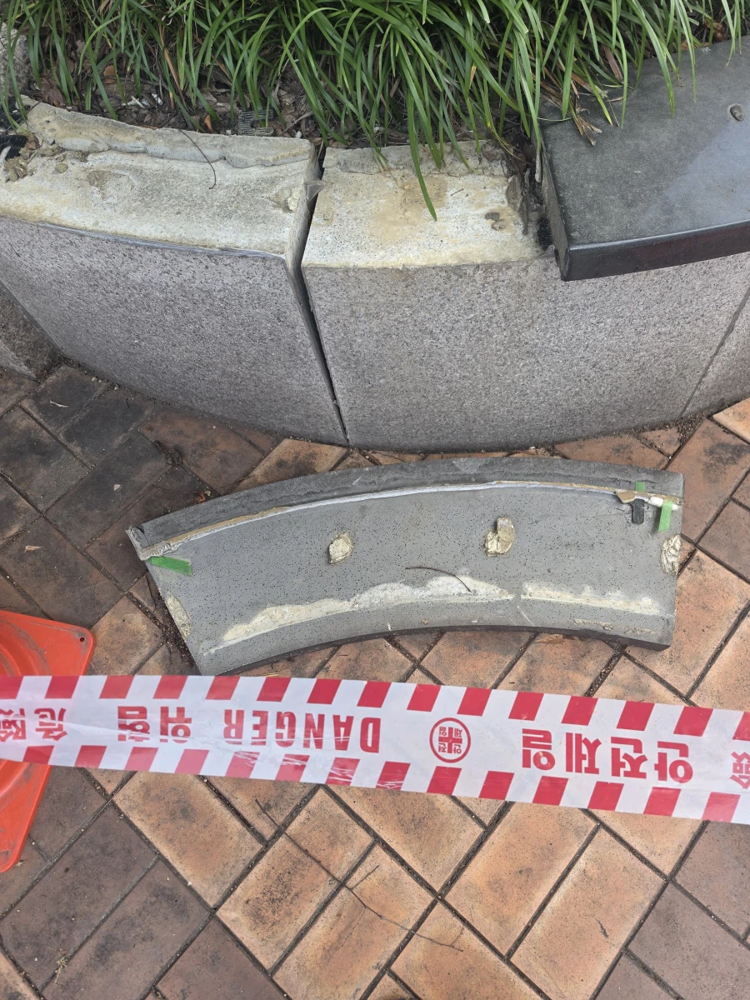

안보이는 면에 아시(초벌)로 함. 근데 진짜 몇분단위로 버팀.
잘 써야함.
접합면 끼리 잘 닦고 난 뒤면 낫긴 하지?
근데 광택 낸 건 되려 안되더라. 그리고 석재 결 따라 록타이트가 스며들어서
변색이 될 수 있음
요즘 기술자 아니고 어디서 보고듣고 야매로 배운새기들이 밖에서 기술자인척 하는게 문제인거임
초밥 와사비 시공이누
평탄화가 안 돼서 떠발이 한다 어쩌구
? : 국가가 권장하는 공법 어쩌구
? : 떠발이가 더 어렵고 시간 오래 걸려 어쩌구...
? : 미장을 해야 압착시공을 하는데 미장 하냐고 물어보면 아무도 안한다고 한다(물어본 적 없음.)
3번은 뭔지 설명좀
시공면에 미장을해야 압착시공 품질이 나옴. 근데 미장까지하면 비용이 떠발이시공에 비해 너무 비싸짐
저 개좆같은 시공하는 씨발새끼들땜에 욕실타일 통통 튀는 소리나고 어떤 거 깨짐 시발 개새끼들
그렇게 욕하는 중국이나 아프리카도 안하는 떠발이를 쳐하는 한국 타일공들 ㅋㅋㅋ
이젠 그냥 어디 국가기관에서 정식으로 가르쳐주는것도 저렇게 가르친다더라
무슨 지자체에서 집수리나 인테리어 교육같은거 있는데 다 저렇게 가르침 걍 뭘 바꾸기에는 늦은거 같음
옹호하는새기들은 좋으니까 니 집에만하세오
당연하게도 자기집엔 온갖정성 다할듯
친구집은 떠발이하고
건물 중 가장 튼튼한 건물이 건설사 본사 건물이라고 하지 ㅋㅋㅋㅋ
아 니미 씨발
평탄화가 마감이 어쩌고 저쩌고 떠발씨발 등장예정
떠발이는 타일을 비비면서 눌러가지고 시멘트가 접착면에 퍼져서 빈공간을 80%이상 채우는게 시방서상 제대로 된 시공이고 저건 그냥 에폭시 or 돌 본드 값 아낄라고 지랄 해놓은거고
떠발이 라고 글에 올라오는 하자 사진들 보면 전부 세게 눌러서 밥 펴면 타일들 평평하게 면 맞추기 귀찮아지니까 그냥 살짝만 눌러서 밥 덩어리째로 얹어만 놓은 날림시공임
이건 떠발이가 아닌데 떠발이혐오 커뮤에서 겁나 미는구나
걍 부실시공이잖아
이건그냥 븃공법아님?
무슨 코딱지 파서 발라뒀냐
이건 에폭시이고 돌쟁이들임 타일이랑 노상관
저거 꼼꼼하게 하는 사람이면 록타이트도 석재용으로 사용하는경우 있긴함